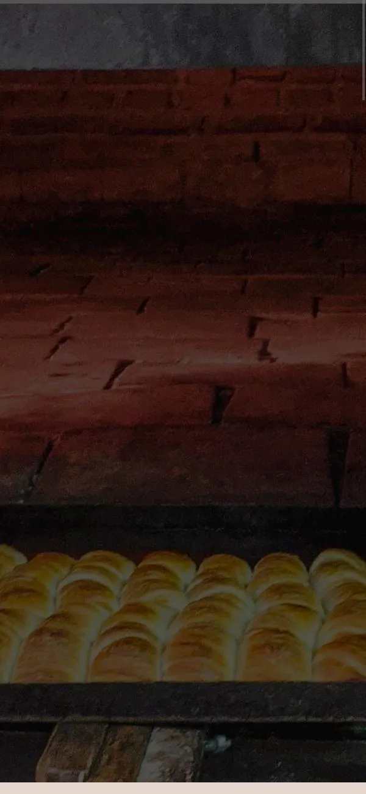
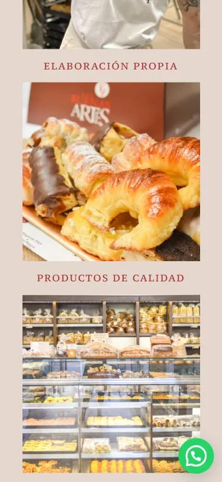
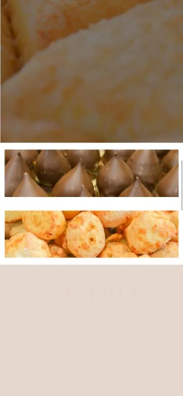
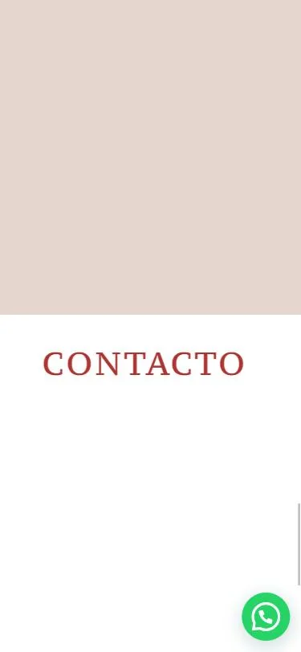
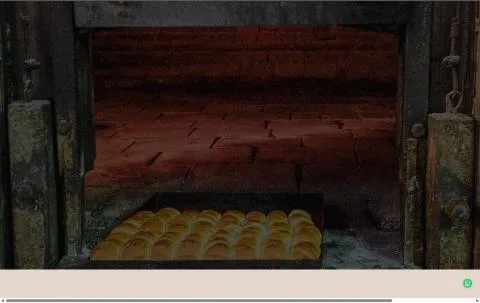
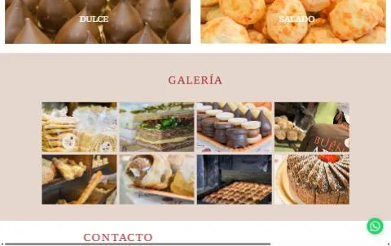

Pitch de rediseño · lasbuenasartes.com.ar
Capturas de lasbuenasartes.com.ar en el celu (375 px) y en la compu (1440 px), octubre de 2026.

Abre con una foto oscura del horno, sin logo, texto ni botón.

Tres fotos y títulos: ningún producto.

La galería queda en blanco.

Contacto: un título y nada más.

En la compu: barra de scroll horizontal y la misma foto oscura.

Sin catálogo, sin precios, sin cómo encargar.
Funcionando: tocá, sumá productos y hacé un encargo de prueba.